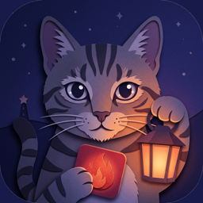

ねこローグ サポート
ブロックを消して魔物をたおす、ねこのローグライク
遊び方
- 手元の猫ブロックを 8×8 の盤に置き、縦か横の 1 列をそろえて消すと、消した色に応じて 攻撃・盾・回復・コイン・毒 の効きがあらわれます。
- 魔物は「あと n 手で攻撃」のとおりに攻めてきます。盾で防ぎ、列を消して HP を削りましょう。
- 勝つと ほうび(なかまねこ・猫ブロック・レベルアップ など)から 1 つ選び、分かれ道・店・たき火・出来事を経て、塔のてっぺんのボスを目指します。
- 旅の終わりに手に入る「星のかけら」で、ほしの祠から 新しい主人公・専用のなかまねこ・今日の試練 を解放できます。
- ガチャもスタミナもありません。オフラインでも遊べます。
よくある質問
Q. 音が鳴りません
iPhone のマナーモード(消音)がオンのときは音が鳴りません。アプリの「設定」で BGM・効果音がオンになっているかもご確認ください。
Q. 途中でやめた旅はどうなりますか
自動で保存され、ホームの「つづきから」で再開できます。
Q. 広告の表示を変えたい
アプリの「設定 → 広告の同意設定」、または iPhone の「設定 → プライバシーとセキュリティ → トラッキング」から変更できます。
Q. 記録をリセットしたい
アプリの「設定 → 記録をリセット」から行えます。元に戻せないのでご注意ください。
Q. 機種変更で記録を引き継げますか
記録は端末内にのみ保存しているため、現在は引き継ぎに対応していません。
お問い合わせ
不具合のご報告やご要望は、下記までお気軽にどうぞ。
お使いの iPhone の機種・iOS のバージョン・どの場面で起きたかを添えていただけると助かります。